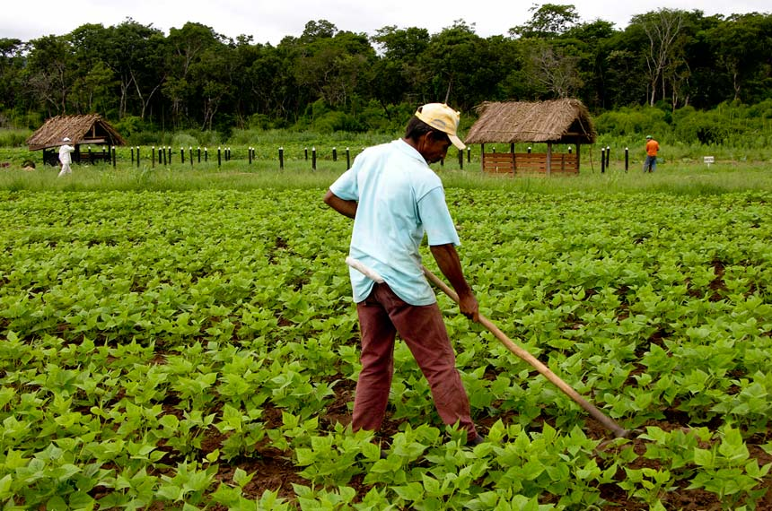

09 Maio 2025
Publicação em 10 Maio 2025 / IDA Angola
IDA lança novo programa de apoio aos pequenos agricultores O Instituto de Desenvolvimento Agrário (IDA) iniciou um programa nacional de capacitação para pequenos agricultores com foco em tecnologias sustentáveis de cultivo e gestão de recursos hídricos.
Publicação em 10 Maio 2025 / IDA Angola
Parceria entre o IDA e cooperativas fortalece produção localO IDA firmou parcerias com várias cooperativas agrícolas em províncias do interior para aumentar a produção local e melhorar o escoamento da produção até os centros urbanos.
Publicação em 10 Maio 2025 / IDA Angola
IDA promove formação sobre agricultura digitalA formação realizada pelo IDA abordou o uso de ferramentas digitais como drones, sensores de solo e aplicativos móveis para modernizar a agricultura angolana e aumentar a produtividade.
Notícias Recentes

IDA distribui kits agrícolas em Benguela

Novo centro de formação agrícola em Malanje
03 Maio 2025

IDA reforça apoio à produção de milho em Huambo
28 Abril 2025
Parceria com universidades fortalece extensão rural
21 Abril 2025